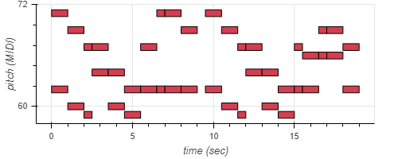
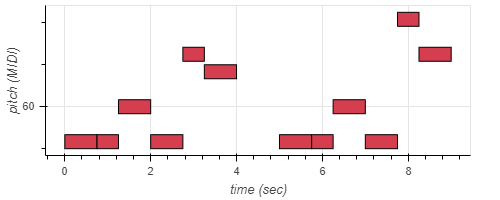
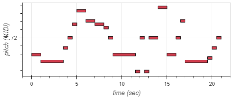
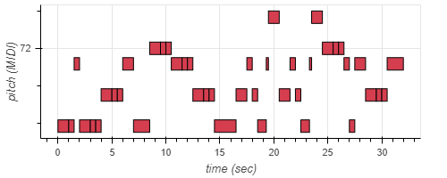
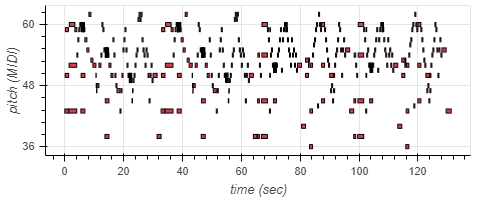

Resultados
MIDIs utilizados
Músicas
Composição Renan

Composição Robson

Composição Robson 2

Composição para o Grupo

Audio MIDI da internet

Respostas Impulsivas
IR - Ron Cooke Hub, University of York
Tamanho: 18000m³

renan_musica x Ron Cooke Hub, University of York
robson_musica x Ron Cooke Hub, University of York
robson_musica2 x Ron Cooke Hub, University of York
grupo_musica x Ron Cooke Hub, University of York
01Sarabande x Ron Cooke Hub, University of York
IR - Hamilton Mausoleum
Tamanho: 9000m³

renan_musica x Hamilton Mausoleum
robson_musica x Hamilton Mausoleum
robson_musica2 x Hamilton Mausoleum
grupo_musica x Hamilton Mausoleum
01Sarabande x Hamilton Mausoleum
IR - York Guildhall Council Chamber
Tamanho: 1140m³

renan_musica x York Guildhall Council Chamber
robson_musica x York Guildhall Council Chamber
robson_musica2 x York Guildhall Council Chamber
grupo_musica x York Guildhall Council Chamber
01Sarabande x York Guildhall Council Chamber
Conclusão
Ao final do experimento, pôde-se observar o funcionamento do sistema MIDI para composição de música, dentro do ambiente IPython. E também, a simulação acústica de ambientes através de suas respostas impulsivas, podendo observar, de maneira qualitiva, as propriedades acúsitcas dos ambientes e suas diferenças através do tamanho e arquitetura.